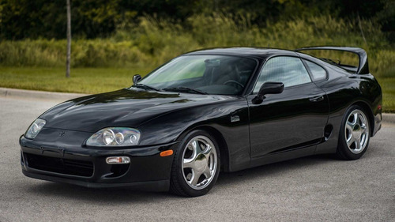

Supra

Modelo icônico da montadora toyota. Possui ao todo 5 gerações,sendo a 4° geração a mais conhecida e icônica. Equipado com seu motor 2JZ-GTE e tração traseira, é capaz de atingir velocidade acima dos 300km/h com poucas modificações
Impreza WRX STI
Modelo mais conhecido da montadora Subaru. Possui ao todo 5 gerações, sendo todas conhecidas por suas características expecíficas. Possui seu icônico motor EJ25 e tração nas 4 rodas, possibilitando atigintir altas velocidades em um curto tempo
Lancer Evolution
Modelo mais esportivo da montadora Mitsubishi. Possui ao todo 9 gerações, sendo todas conhecidas. Possui um motor muito conhecido, o DOHC, além de tração nas 4 rodas, o que possibilita altas velocidades em um curto tempo
 Modelo que carrega toda a esportividade da montadora Nissan. Possui ao todo 4 gerações, sendo todas conhecidas, principalmente pelo filme Velozes e Furiosos. Possui o famoso motor vr38 com tração nas quatro rodas, atingindo incríveis 340km/h
Modelo que carrega toda a esportividade da montadora Nissan. Possui ao todo 4 gerações, sendo todas conhecidas, principalmente pelo filme Velozes e Furiosos. Possui o famoso motor vr38 com tração nas quatro rodas, atingindo incríveis 340km/h
 Entre em contato através do github
Entre em contato através do github
 gustavo.holiveira@sptech.school
gustavo.holiveira@sptech.school
 (11)953967123
(11)953967123